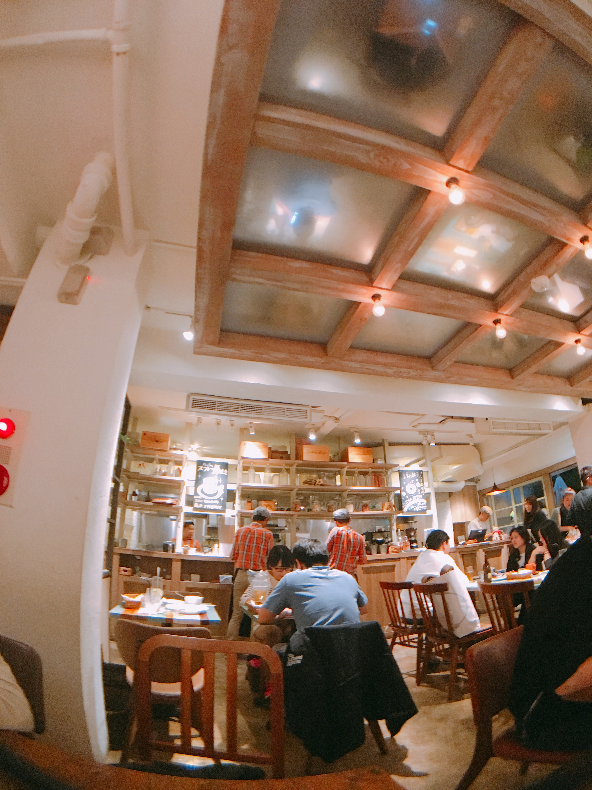
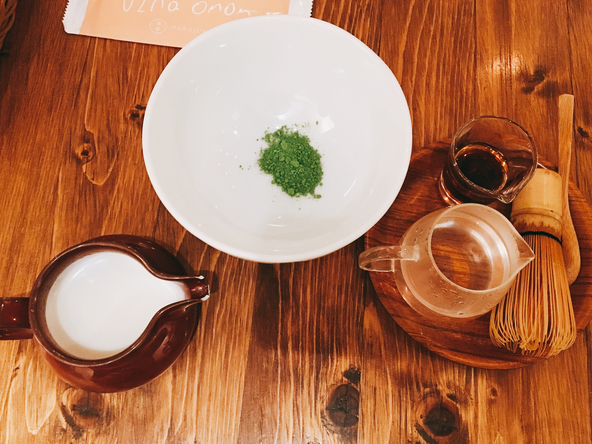

東區216巷弄：杏桃鬆餅屋
這天跟朋友吃完晚餐，發現時間還很充裕，就順路在東區逛了起來，
走一走發現果然還是得找個地方坐下來，因為太久沒碰面，想跟對方說的話實在太～多～了～～
朋友所幸找了一間看起來不錯的咖啡廳，我們沒猶豫就直接進去了，
沒關係啦，踩雷算我朋友的。

這間咖啡廳的裝潢走濃濃的日雜少女風，
剛進來時有些不習慣，畢竟我平常是很少被這種少女氛圍的東西圍繞的。

熱抹茶拿鐵 $180
來到這，我必點的當然還是抹茶拿鐵，抹茶是我此生摯愛啊～～～

他們的抹茶很特別，一端上桌時會有服務生過來協助你，
先加入沸水，用茶刷將抹茶粉刷開至起泡，
接下來我們就可以依照自己的喜好加入熱牛奶和蜂蜜了。

這濃郁的抹～茶～香～～～～～
太.幸.福.惹。

蘇芙蕾厚鬆餅 $220
剛吃完晚餐還有點飽，我們三人合點了一份厚鬆餅，
畢竟來鬆餅屋好像還是應該要吃一下吃鬆餅，比較說得過去。
鬆餅咬起來很扎實，而且不會太甜，
想必這QQ的外觀應該也吸引了不少網美朝聖。
好的～謝謝大家收看，雖然結束的有點突然，但我已詞窮了，
我們下次再見唷～
 ｜UZNA OMOM 杏桃鬆餅屋
｜UZNA OMOM 杏桃鬆餅屋
 ｜11:00 - 21:30
｜11:00 - 21:30
 ｜台北市大安區忠孝東路四段216巷19弄16號
｜台北市大安區忠孝東路四段216巷19弄16號